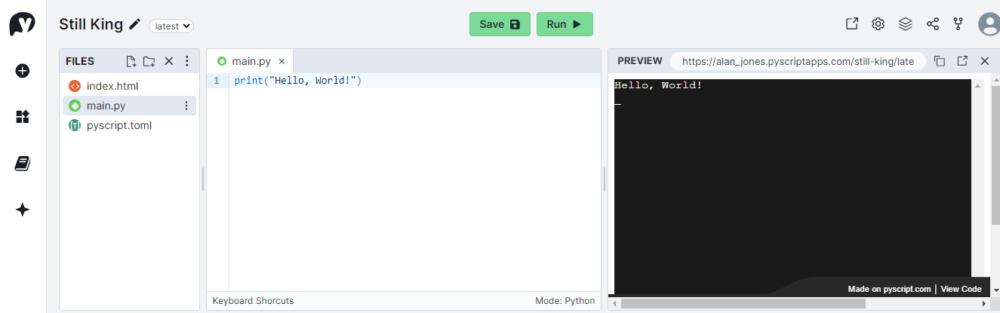
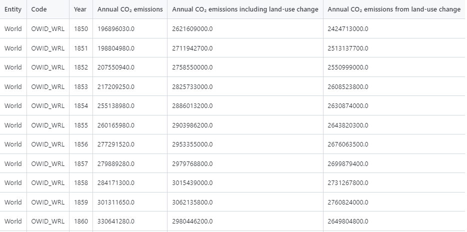

If the web and Python had a baby, you'd get PyScript.
While I'm not sure that is a concept that I want to engage with, I get the point. PyScript combines two of the most important global technologies, the web and Python. Only time will tell how important it turns out to be but, if nothing else, it's a pretty cool technology.
PyScript was built on top of the Pyodide Python interpreter which is a port of CPython to WASM the web assembly language that can run in a browser. This means that you can execute Python programs, natively, in the browser - no translating to Javascript is required.
Does this signal the end of JavaScript?
No, it doesn't. PyScript sits alongside JavaScript and communicates with it; JavaScript remains an essential part of the browser ecosystem.
PyScript has been around for barely a couple of years but it has already undergone a major re-write, dubbed in some quarters 'PyScript Next'. In the new version, you have a choice of interpreters: the original Pyodide interpreter and now a MicroPython interpreter, too.
One of the drawbacks of PyScript has been the fairly lengthy load time but now, according to Jeff Glass, the blogger and a maintainer of PyScript, the new version using Pyodide loads significantly quicker than the original and, when using the much smaller footprint MicroPython, loads in only 4% of the time.
Small also means less capable, though. MicroPython was designed to run on micro-controllers and does not include the full set of standard libraries, let alone access to the vast number of packages available on PyPi. Pyodide, on the other hand, has several packages built in and can load pure Python packages from PyPi.
Yes, of course, I was just getting around to it.
First, we're going to write a bare-bones PyScript app just to get a pattern in our heads of how a PyScript app is constructed (it's quite simple). Then we'll develop a data visualisation app that imports external data and uses Python libraries to produce an engaging web page that can be deployed on any server.
There are a few options when constructing a PyScript app but we are going to use the recommended method which requires the use of three files: an HTML file, a configuration file and a file that contains the Python scripts.
And here is a warning: the new version of PyScript is not completely compatible with the previous versions. So, if you've followed any of my previous tutorials about PyScript, please pretend that you didn't. I'm not going to detail the differences; we'll just build an app with the new version - you'll see that it is not so very different.
The easiest way to get started is to sign up for an account on pyscript.com. This is an online IDE that lets you code run and publish PyScript apps for free.
If you do that and click on the little plus sign on the left of the dashboard, it will set up a new project for you with three default files.
The files are index.html, main.py and pyscript.toml. (If you want to run through this on your local machine, rather than pyscript.com then you can copy the files from the listings below - put them all in the same folder)
These are the three files that I mentioned earlier and we'll go through them one by one.
Yes, I'm sorry, but you do have to know a bit of HTML. It's not so difficult, though. The HTML file that will be generated by pyscript.com will look soemthing like this:
<!DOCTYPE html>
<html lang="en">
<head>
<title>Still King</title>
<!-- Recommended meta tags -->
<meta charset="UTF-8">
<meta name="viewport" content="width=device-width,initial-scale=1.0">
<!-- PyScript CSS -->
<link rel="stylesheet" href="https://pyscript.net/releases/2024.3.1/core.css">
<!-- This script tag bootstraps PyScript -->
<script type="module" src="https://pyscript.net/releases/2024.3.1/core.js"></script>
</head>
<body>
<script type="py" src="./main.py" config="./pyscript.toml" terminal></script>
</body>
</html>
This is a pretty basic web page: <!DOCTYPE html> tells the browser that this is an HTML5 file; the rest of the file is contained in a pair of <html>tags and the language is set to be English; within those tags are a pair of <head>tags and a pair of <body>tags.
Inside the head there are recommended meta tags that will ensure that the file is correctly rendered on a range of devices. Following that we import the PyScript CSS file and the PyScript JavaScript file from pyscript.net. Note that the particular releases of the files are specified (here it is version 2024.3.1) - in previous versions you were able to specify the 'latest' version but this is now deprecated. Loading the latest version was always a dodgy idea, I think, because any changes to a new version could potentially break your app.
In the body tag is a <script> tag that has the following attributes:
type="py" - this means that the Pyodide interpreter will be used. For Micropython the type needs to be "mpy".
src="./main.py"- this is the location and name of the Python script.
config="./pyscript.toml" - this is the configuration file that can be either in TOML or JSON format - here we are using TOML.
terminal- this tells PyScript that there should be a terminal window on the web page (it's here that the perennial phrase "Hello World" will be written).
The purpose of this file is to set the configuration for the app. It is here that external files and libraries should be declared. In this app there is no configuration to speak of and it only contains the name of the app:
name = "Still King"
Here is where the Python code resides and later we will see a rather more complex chunk of code. But for now main.py simply contains:
print("Hello, World!")
Now, that was a surprise, wasn't it?
The printstatement is standard Python and its output is to the terminal (which we've placed on the web page). So, when you load the page you will simply get a message written into a black panel on an otherwise blank webpage.
If you are using pyscript.com, then simply hit the run button and the webpage will be rendered in a preview panel.

If you are working locally, then you need to start up a local web server ( just double-clicking on the web page will not load the other files due to CORS restrictions). So, open a command window, navigate to your working directory and type:
python -m http.server
This will start a server so, in your browser, open "localhost:8000". This should automatically open "index.html" and thus run the app. If for some reason this doesn't happen (maybe you called your file something else), you should see a directory listing of your folder - click on the HTML file to run it.
You can find the app on pyscript.com here: Still King - click in the bottom right of the screen to see the code. (You've probably guessed that pyscript.com chooses the name of the application - you can, of course, change it.)
OK, one step at a time. Before we can visualise it, we need some data. I'm going to use a dataset that tracks Global CO2 emissions over time - you can download it here: CO2 Data (also see Notes, below). Put it into the same folder as the code. You can see what it looks like in the image below.

It is a subset of a larger dataset that includes many countries and areas of the World. This file contains data for the World as a whole, so the first two columns are somewhat redundant. To find out more about the data see the Notes, below.
PyScript cannot access the local file system but it maintains a virtual file system that resides in the browser (well, to be accurate it is Pyodide that does this). So, in order to have access to the data we need PyScript to copy the file into the virtual file system when it loads the page.
To achieve this, we need an addition to the pyscript.conf file. Add the following code to that file.
[files]
"world_df.csv" = "./world_df.csv"
This 'files' section tells PyScript to copy the file "world_df.csv" into a file of the same name in the virtual file system when the page loads. Now, when the app has started the CSV file can be accessed by Python code in the conventional way. For example, we will load the data into a Pandas dataframe like this:
df = pd.read_csv('./world_df.csv')
We are going to use Plotly to draw a chart on our web page and while we will create this in Python, getting it on to a webpage usually means writing a bit of JavaScript to render the chart.
However, to my very pleasant surprise, it seems that one of the types of content that PyScript handles automatically is Plotly figures (this wasn't the case in previous versions).
Let me explain.
PyScript uses a method displayto put content into a container on the web page. The following Python code displays the content of the variable header in a container on the web page with the id 'header'.
display(header, target="header")
The content of the variable headercould be text (and in our program it is) but displaycan also deal with more complex such as a Matplotlib figure - PyScript takes care of how the content is rendered.
In previous versions that more complex content did not include Plotly figures but now it does. So if we construct a Plotly figure in Python in the variable figwe can simply write
display(fig, target="graph")
in order to render that figure on the webpage. Excellent!
So, let's do that.
Here is a the web page that we are going to use.
<!DOCTYPE html>
<html lang="en">
<head>
<title>Plotly Viz0</title>
<meta charset="UTF-8">
<meta name="viewport" content="width=device-width,initial-scale=1.0">
<link rel="stylesheet" href="https://pyscript.net/releases/2024.3.2/core.css">
<script type="module" src="https://pyscript.net/releases/2024.3.2/core.js"></script>
<!-- Plotly JS library-->
<script src='https://cdn.plot.ly/plotly-latest.min.js' crossorigin="anonymous"></script>
</head>
<body>
<script type="py" src="./viz1.py" config="./viz1.toml"></script>
<!-- Header and subheader -->
<h1 id="header"></h1>
<h2 id="subheader"></h2>
<!-- This is where the chart will be displayed -->
<div id="chart1"></div>
<!-- The description tag is here -->
<div id="description"></div>
</body>
</html>
The <head>part is pretty much identical to the one we already seen. The differences are the title and the inclusion of the Plotly Javascript library - we won't be using this explicitly but it must still be imported.
The <body>contains the same <script>tag that we saw before but with different names for the files.
Following this there are three areas, the header and subheader, which will contain text, a <div>tag that will hold the chart and, finally, another <div>tag that will hold some decriptive text.
It is important to note that each tag is given a unique id - this will be used to identify it in the Python code.
I hope that you can see that this is a very simple template that could be used for a number of different purposes.
Now let's look at the configuration.
packages = ["pandas","plotly"]
[files]
"world_df.csv" = "./world_df.csv"
Here we've set the packages that we will use and the file that must be loaded. Each of these will be loaded at startup.
Now for the main logic of the app.
This is completely standard Python. We import the libraries that we need and this must include displayfrom the built-in pysciptlibrary.
We then assign some variables with text that correspond to the headers and description that we saw earlier and we use the displaymethod to place then in the appropraie <div>tags in the webpage.
Next, we read the data into a Pandas dataframe and then create a Plotly figure - a line chart - and we display that in the <div>called "chart1".
# Import libraries
import pandas as pd
import plotly.express as px
from pyscript import display
header = """World CO2 Emissions over Time"""
subheader = "CO2 Emissions tracked over the period 1850 to 2020"
description = """The graph shows the annual emissions of Carbon Dioxide,
in tonnes, emitted globally
"""
display(header, target="header")
display(subheader, target="subheader")
display(description, target="description")
df = pd.read_csv('./world_df.csv')
fig = px.line(df, x="Year", y='Annual CO₂ emissions',
width=800, height=400,
template="plotly_white")
display(fig, target="chart1")
The result is a web page that displays the chart ans the text around it. We could, of course, change the text and the chart in the Python code to produce an entirely different webpage without having to chage the HTML at all.
Why have I call two of the files 'viz1' when the HTML is called 'viz0'? Because there is also a 'viz1.html' which includes the Bootstrap user interface library and produces a rather prettier page.
You can see the resulting, prettier, web page here: Hidden Cherry.
If you look in my GitHub repo (see Notes, below), you will find both versions.
I hope you will agree that using PyScript is a fairly simple way of creating a data visualistion web app. There is one bugbear: as you will already know if you've tried out the apps, and despite Jeff Glass's comments, it is still rather slow to load the page.
However, that is a one-off occurrence at startup due to having to load the rather bulky PyScript library. After the initial load, a PyScript app reacts as quickly as any other webpage. If, for example, we were to create an interactive app that changed the the chart in response to some user input, we would find that it responds as quickly as any other web page.
Thanks for reading, I hope this has been useful. Also, I would reiterate that PyScript tutorials like this that target versions before the end of 2023 are now very likely to be out of date.
If you like this type of article, then please consider subscribing to my occasional, and free, newsletter where I post links to articles about Data Visualisation, Data Science, AI and other Python-related stuff.
For links to code and data, see the Notes, below.
CO2 Data can be downloaded from my GitHub repo using the link, it is derived from the Our World in Data (OWID) co2-data GitHub repository, Creative Commons BY license
You can find the code and data in my GitHub repo
All images, screenshots, etc. are by me, the author, unless otherwise indicated.
Disclaimer: I have no affiliation with Anaconda, PyScript.com_or PyScript.net.